1 El origen de la vida
1.1 El método científico
La biología, al igual que el resto de las ciencias naturales como la química, la física o la geología, pretende encontrar una explicación sobre cómo y por qué se dan los distintos procesos de la naturaleza; en el caso concreto de la biología, en los seres vivos.
Para esto, científicos han aceptado la necesidad de cumplir una serie de pasos para que las conclusiones a las que se lleguen sean válidas y aceptables. A estas etapas las conocemos como el método científico.
El método científico es un proceso sistemático basado en la observación y la experimentación, gracias al cual obtenemos conocimiento científico, y para llegar a este, es necesario seguir una serie de pasos:
Observación: Reconocemos un problema al aplicar los sentidos a algún objeto o fenómeno natural.
Planteamiento del problema: Planteamos el problema en forma de pregunta a la que hay que dar respuesta.
Formulación de hipótesis: Hacemos suposiciones lógicas y que puedan ser contrastables para dar respuesta a la pregunta.
Experimentación: Diseñamos experimentos que puedan confirmar o descartar la hipótesis planteada. En este punto es importante controlar las variables que puedan influir en el experimento.
Aceptación/refutación: Si el experimento ha demostrado que la hipótesis no es válida, se ha refutado la hipótesis, por lo que debemos plantear una hipótesis nueva y seguir de nuevo todos los pasos. Si después del experimento la hipótesis se considera cierta, creamos una teoría.
Conclusión: Una vez que hemos confirmado la hipótesis, redactamos una teoría o una ley que explique el problema inicial.
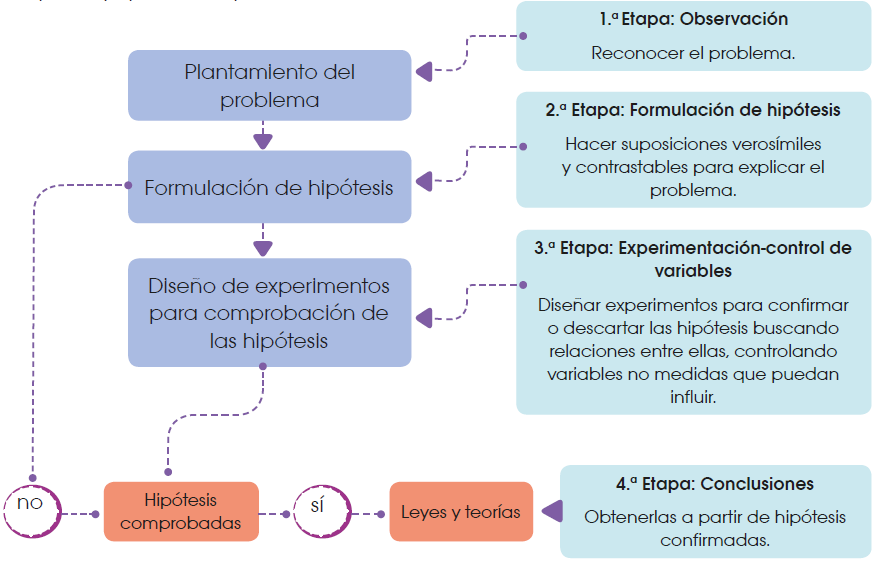
Gracias al método científico, podemos construir un conocimiento que explique cómo funciona el mundo natural, pero para aplicar este método de forma exitosa, hay que cumplir ciertos requisitos:
Para empezar, es importante eliminar los prejuicios. Esto significa que tenemos que ser lo más objetivos posible, sin permitir que nuestras ideas previas sobre un concepto afecten al análisis o a la experimentación. Debemos demostrar una actitud imparcial.
A la hora de plantear hipótesis y experimentos que prueben o refuten la hipótesis, es importante ser creativo para poder proponer ideas novedosas, pero siempre desde un razonamiento lógico y teniendo en cuenta que las hipótesis deben ser comprobables mediante un experimento, y que ese experimento pueda repetirse en distintas condiciones.
Durante la realización del experimento, hay que tener en cuenta todas las variables que puedan influir en el mismo. Una vez que tengamos claras las variables y cómo afecta cada una al fenómeno que se está estudiando, debemos controlarlas o reducirlas al mínimo para asegurarnos de que los datos que obtendremos del experimento estén más apegados a la realidad.
Al analizar los datos, es necesario ser honesto y no manipular el experimento ni modificar los datos para hacer que la hipótesis se cumpla. El análisis debe ser objetivo e imparcial.
Para finalizar, es importante tener la mente abierta a nuevas ideas. A lo largo de toda la historia de la ciencia, se han afirmado o descartado teorías y leyes sobre el entorno que nos rodea. Esto es algo normal, ya que, al mejorar la tecnología, podremos mejorar la experimentación, y así podremos acercarnos más al conocimiento científico. No debemos pensar que una teoría es completamente cierta, sino que debemos asumir que es una forma de expresar, lo más acertadamente que podamos, un fenómeno natural; y que cabe la posibilidad de que no sea totalmente irrefutable.
1.2 Microscopía
Como ya vimos, en cualquier ciencia, para poder avanzar en el conocimiento que poseemos sobre el funcionamiento del mundo que nos rodea, es importante seguir una serie de procedimientos y aplicar el método científico a nuestra investigación. En concreto, dentro de la biología, uno de los puntos más relevantes es la observación, pero, la base de cualquier ser vivo, la célula, no es visible al ojo humano. Para poder observar y estudiar células o estructuras más pequeñas que una célula, debemos utilizar técnicas como la microscopía.
1.2.1 Microscopía óptica
Esta técnica se basa en la observación de las células y los tejidos por medio del microscopio óptico. Este instrumento, ideado en el siglo XVII, abrió el camino de la investigación celular gracias a los estudios realizados por Robert Hooke y otros contemporáneos suyos. Hoy en día, aún continúa siendo muy útil, tanto en la investigación como en otros campos (microbiología, medicina…).
El microscopio óptico se basa en la capacidad de la luz para atravesar superficies muy finas. Contiene varias lentes que proporcionan un aumento de hasta 1500 veces y un un poder de definición de 200 nm (0,2 micras). Es preciso llevar a cabo una serie de operaciones sobre el material que se quiere observar, para obtener una preparación; es decir, una muestra tratada para conseguir el máximo rendimiento del microscopio.
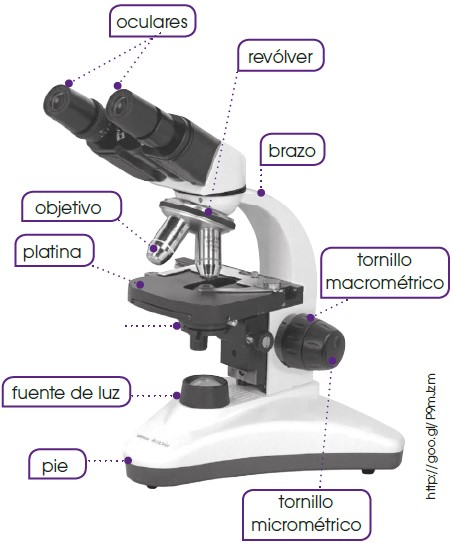
Elaboración de preparaciones
En la mayor parte de los casos, procedemos del modo siguiente:
Fijación: Esta operación estabiliza los componentes celulares, con el objetivo de que su aspecto sea tan parecido como sea posible al del tejido vivo. Empleamos formaldehído, ácido acético y alcohol etílico.
Deshidratación: El agua es un componente muy abundante en la mayoría de los tejidos y conviene eliminarla de la muestra para facilitar las operaciones posteriores. Para ello, sumergimos la muestra en diversos baños de alcohol de graduación creciente hasta llegar al alcohol absoluto, que produce una deshidratación total.
Inclusión: Los tejidos son, mayoritariamente, blandos y frágiles, por lo que resulta muy difícil hacer cortes finos sin estropear el material. Para evitar este problema, añadimos a la muestra una sustancia líquida que se interpone entre los componentes del tejido y que, después, se solidifica. Esta sustancia es, habitualmente, la parafina.
Corte: Cortamos la muestra incluida en parafina y solidificada en láminas muy finas con el microtomo. Obtenemos cortes de 1 a 25 μm de espesor que permiten el paso de la luz. Existen distintos diseños de microtomo. En los modelos más sencillos, el corte se hace a mano con una cuchilla muy afilada. En otros casos, los microtomos incorporan automatismos y son más precisos.
Montaje: Colocamos los cortes sobre un portaobjetos y cubrimos con xileno (o xilol), para eliminar el material de la inclusión y dejar la muestra lista para la acción de los colorantes.
Tinción: Las células, en su estado natural, son transparentes e incoloras y resultan, por lo tanto, casi invisibles; por ello, requerimos la aplicación de colorantes. Los colorantes presentan especificidad para unas sustancias concretas. De este modo, teñimos compartimentos celulares en los que predomina en su mayoría una determinada sustancia. La utilización de diversos tipos de colorantes sobre una célula permite distinguir distintos componentes celulares. Una de las técnicas de tinción más usada es la aplicación de hematoxilina y eosina (H-E). La eosina tiene carácter ácido y, por afinidad química, tiñe de color rosado las zonas de la célula en las que predomina el pH básico, fundamentalmente el citoplasma. La hematoxilina es de carácter básico y tiñe de color azulado los componentes ácidos de la célula. Por ello, es útil para destacar zonas, como el núcleo y algunas regiones citoplasmáticas, debido a su contenido en ácidos nucleicos. Después de aplicar los colorantes, lavamos el exceso y colocamos un cubreobjetos sobre la muestra.
| Colorante. | Componentes celulares teñidos. |
|---|---|
| Orceína-acética. | Cromosomas. |
| Verde-Yodo. | Cromatina. |
| Verde-Jano. | Mitocondrias. |
| Safranina. | Paredes celulares de celulosa. |
| Azul de toluidina. | Coloración general con elevado contraste. |
- Conservación: En el caso de las preparaciones que queremos conservar, sellamos el cubreobjetos con sustancias, como el bálsamo del Canadá, que evitan la entrada de aire y la putrefacción de la muestra.
Otra técnica habitual en microscopía óptica es el frotis, que llevamos a cabo con sustancias líquidas o semilíquidas, como la sangre, que extendemos sobre un portaobjetos formando una capa fina. A continuación, realizamos los procesos de fijación, deshidratación y tinción, y podemos observar la preparación sin necesidad de cubreobjetos.
1.2.2 Microscopía electrónica
Esta técnica se basa en la utilización de haces de electrones en lugar de luz. Existen distintos tipos de microscopios electrónicos.
El microscopio electrónico de transmisión permite la observación detallada del interior de las células.
La sustitución de la luz por electrones proporciona un poder de resolución de hasta 10 Å; es decir, la distancia mínima entre dos puntos próximos que pueden verse separados es de 10 Å. El número de aumentos puede llegar a 106 veces, valores muy superiores a los que se consiguen con el microscopio óptico.
Obtenemos las imágenes del modo siguiente:
Los electrones se producen en un filamento de tungsteno que constituye el cátodo y que está situado en la parte superior de un cilindro de unos dos metros de longitud. Para evitar que los electrones se dispersen al colisionar con las moléculas y los átomos de aire, mantenemos el vacío en el interior del cilindro.
Los electrones son atraídos hacia una placa con carga positiva, el ánodo. Entre el ánodo y el cátodo aplicamos una diferencia de potencial que aumenta la energía cinética de los electrones.
En el ánodo existe un pequeño orificio. Cuando los electrones lo atraviesan, obtenemos un haz fino de electrones.
Unas bobinas electromagnéticas actúan como lentes (condensadora, objetivo y de proyección) y enfocan el haz de electrones.
Colocamos la muestra en el interior del cilindro. Al atravesar la muestra, los electrones reducen su velocidad de distinta manera según las características de la parte de la muestra que atraviesan. Finalmente, inciden sobre una pantalla fluorescente, donde producen un punto luminoso cuya intensidad es directamente proporcional a la velocidad de los electrones.
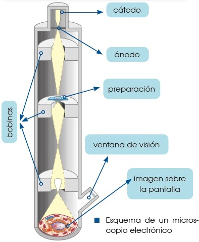
1.3 Origen y evolución del universo
Hace cientos de miles de años, con temperaturas de unos miles de grados, los electrones fueron frenados lo suficiente como para ser capturados por los núcleos atómicos, que originaron los primeros átomos completos. La materia así creada se asoció 1000 millones de años después, formó protogalaxias, compuestas por estrellas que en su interior sintetizaron núcleos atómicos pesados, como carbono, nitrógeno, hierro… A partir de los productos de estas protogalaxias, se formaron nuevas generaciones de galaxias, como la Vía Láctea.
Según las últimas teorías sobre el origen del universo, este se habría originado entre 15 000 y 20 000 millones de años a partir de la expansión de un único punto de temperatura y densidad infinitas en lo que conocemos como el big bang. Este punto o singularidad inicial contendría toda la materia y la energía que constituyen nuestro universo, y su expansión marcaría el inicio del tiempo y el espacio.
| 0 | Singularidad de la gran explosión inicial Big bang Leyes de la física exóticas y desconocidas. |
| 10-43 segundos | Era de la teoría de la gran unificación. El equilibrio entre materia y antimateria se decanta a favor de la materia. |
| 10-35 segundos | Era electrodébil, dominada por quarks y antiquarks. |
| 10-10 segundo | Era de los hadrones y leptones. Los quarks se asocian formando protones, neutrones y otras partículas. |
| 1 segundo | Los protones y neutrones se combinan formando núcleos de hidrógeno, helio, litio y deuterio. |
| 3 minutos | La materia y la radiación se acoplan y se forman los primeros átomos estables. |
| 1000 millones de años | Cúmulos de materia forman quásares, estrellas y protogalaxias. En el interior de las estrellas comienzan a sintetizarse núcleos más pesados. |
| 15 000 millones de años | Se forman nuevas galaxias con sistemas solares alrededor de las estrellas. Los átomos se enlazan entre ellos para formar moléculas. |
A continuación, vamos a ver los fenómenos que estas teorías suponen que tuvieron lugar desde lo que se considera el inicio del tiempo y del universo. A medida que se producía la expansión, la temperatura disminuyó, hasta alcanzar los 100000 millones de grados aproximadamente tres minutos después del inicio de la expansión. Este descenso abrió la posibilidad de la condensación de la energía en partículas subatómicas, quarks en primer lugar, que acabaron asociándose en protones, neutrones, mesones y bariones. Unos tres minutos después del big bang, estas partículas dieron lugar a los núcleos atómicos más ligeros.
1.4 Origen y evolución de la Tierra
Mucho después del origen del universo, la materia creada chocaba y se fusionaba generando estructuras cada vez mayores llamadas planetesimales, las cuales seguían chocando entre sí para originar planetas. De esta manera, hace aproximadamente 4500 millones de años, se formó la Tierra.
A medida que los protoplanetas chocaban entre ellos en el proceso de formación de la Tierra primitiva, la energía liberada por los impactos, así como la desintegración de los elementos radioactivos, incrementaron la temperatura, y provocaron que los materiales que formaban el planeta se fundieran. De esta manera, se produjo una segregación durante la cual los componentes más pesados se desplazaron hacia el centro por efecto de la gravedad, mientras que los más ligeros quedaron en las capas exteriores.
Poco a poco, estos materiales fueron enfriándose y solidificándose, y produjeron una delgada corteza. La dinámica interna del planeta condujo a una serie de episodios volcánicos continuados, durante los cuales se liberaron al exterior los gases generados por el magma, tales como CO2, SO2, compuestos de nitrógeno y vapor de agua. Este último se condensó en la atmósfera, y originó una capa nubosa de gran potencia, que precipitó en forma de lluvia sobre la superficie y originó los océanos.
En la Tierra primitiva, con una atmósfera reductora, pobre en oxígeno, podrían haberse formado una gran variedad de compuestos orgánicos. Algunos científicos afirman que, solo con la energía que se libera actualmente en la Tierra en forma de relámpagos, las reacciones en la atmósfera habrían podido formar en 100000 años materia orgánica suficiente como para cubrir la superficie de la Tierra con un espesor de un metro. Estas moléculas, arrastradas por la lluvia, se acumularían en los océanos, que quedarían convertidos en una suspensión de materia orgánica: algo parecido a un caldo, el caldo primigenio.
A partir de este punto, se iniciaría un proceso de evolución química, a través del cual las moléculas orgánicas se irían perfeccionando, creando un sistema de autorreplicación basado en los ácidos nucleicos (ADN y ARN). De este modo, las moléculas orgánicas crearían un entorno propio en el que se aislarían gracias a capas de sustancias grasas o lípidos, que delimitarían los primeros protoorganismos.
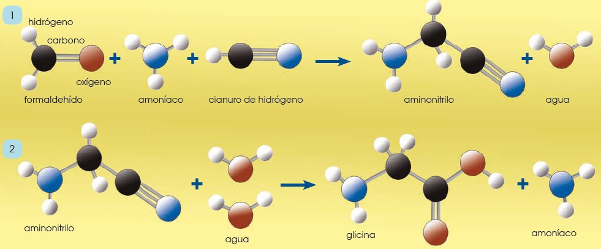
Estos primeros organismos, semejantes a las bacterias actuales, se alimentarían de la materia orgánica presente en el agua de los océanos hasta que esta dejó de ser abundante. Entonces, obligados a buscar nuevas estrategias de obtención de nutrientes, un grupo de seres vivos descubriría una reacción que habría de cambiar radicalmente el aspecto del planeta: la fotosíntesis.
La captación de CO2 y la liberación a la atmósfera de O2 por parte de los organismos autótrofos tendrá una serie de consecuencias que marcarán la evolución del planeta y de sus pobladores.
| El descenso de la concentración atmosférica de CO2 provoca: |
|
| El incremento de la concentración atmosférica de O2 produce: |
|
Si observamos las atmósferas de los otros dos planetas interiores que disponen de ella, Venus y Marte, observaremos que se basan fundamentalmente en CO2 y N2, tal y como se supone que era la primitiva atmósfera terrestre. La Tierra es el único planeta que conocemos con un porcentaje de oxígeno atmosférico cercano al 20 %, producto de la actividad de los seres vivos.
Métodos de datación y eras geológicas
La datación de los acontecimientos geológicos que se han sucedido en el planeta Tierra se ha realizado de diversas maneras. En primer lugar cabe diferenciar entre la datación relativa y la datación absoluta.
La datación relativa nos informa que materiales son más antiguos que otros, pero no nos dice cuáles son sus edades. Por ejemplo, podemos saber que un fósil A situado en un estrato horizontal por encima de otro, es más moderno que otro fósil B contenido en el estrato inferior, pero no obtenemos información de cuál es su edad.
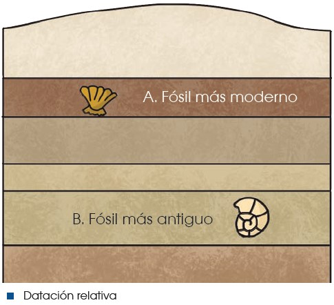
Para realizar una datación absoluta se utilizan actualmente métodos de radiocronología. Estos métodos se basan en la capacidad de desintegración de los isótopos radiactivos de diferentes elementos. Los elementos radiactivos o padres se desintegran y dan lugar a los elementos radiogénicos. Así, en una determinada roca, a partir del momento en que se forma y a medida que pasa el tiempo, aumenta el porcentaje de los elementos radiogénicos y disminuye el de los radiactivos. Si conocemos la tasa de desintegración del elemento radiactivo en cuestión y los porcentajes en los que aparece en la roca junto con sus elementos hijos, podremos inferir la época de formación de dicha roca.
| La datación por carbono-14. |
|---|
Uno de los métodos de determinación de la edad de las sustancias orgánicas por radiocronología es el método del carbono-14. Este es un isótopo radiactivo del carbono que se origina en las capas altas de la atmósfera y que es incorporado a lo largo de la vida por plantas y animales. Se mantiene una proporción constante entre el carbono-14 y el carbono- 12 ordinario. A partir de la muerte del organismo, la cantidad de carbono-14 empieza a disminuir, porque se detiene su incorporación a la vez que va desintegrándose y da lugar a carbono-12. Conociendo la relación que existe entre carbono-14 y carbono-12 en una muestra de materia orgánica, podemos conocer de forma muy precisa la fecha de la muerte del organismo. El carbono-14 tiene una vida media muy breve (5730 años) y, por ello, solo es aplicable a muestras de menos de 40 000 años de antigüedad. |
Cuando una roca ígnea se solidifica, se forman minerales que atrapan isótopos radiactivos, los cuales iniciarán su desintegración hacia los elementos hijos estables. Los isótopos más utilizados en datación geológica son los de la tabla adjunta. La datación de las rocas nos permite establecer una escala de tiempo geológico sobre la cual situar los acontecimientos y etapas por los cuales ha pasado el planeta. Las eras y períodos en los que se divide la historia de la Tierra no tienen la misma duración, ya que esta escala se estableció en función de las formas de vida fósiles presentes en las diferentes rocas, y se determina posteriormente la datación absoluta de las mismas.
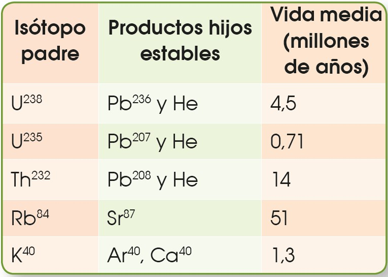
1.4.1 Escala temporal geológica

- Precámbrico:
Es un supereón que abarca la mayor parte de la historia de la Tierra antes de la aparición de organismos con conchas duras o esqueletos. Este eón se divide en tres períodos: el Hádico, el Arcaico y el Proterozoico. Después del Precámbrico, sigue la división en eras geológicas, como la Paleozoica, la Mesozoica y la Cenozoica.
Eón Hádico (4560-4000 millones de años): Formación de la Tierra y condiciones inhóspitas.
Eón Arcaico (4000-2500 millones de años): Formación de océanos y primeras formas de vida unicelular.
Eón Proterozoico (2500-541 millones de años): Evolución de organismos unicelulares y formación de la supercontinente Rodinia.
Período Paleoproterozoico (2500-1600 millones de años): Desarrollo de cianobacterias y primeras acumulaciones significativas de oxígeno.
Período Mesoproterozoico (1600-1000 millones de años): Formación de supercontinentes y diversificación de eucariotas.
Período Neoproterozoico (1000-541 millones de años): Glaciaciones globales y aparición de organismos multicelulares complejos.
- Era Paleozoica:
Cámbrico (541-485 millones de años): Aparición de vida multicelular, explosión de diversidad biológica.
Ordovícico (485-443 millones de años): Desarrollo de los primeros peces y plantas terrestres.
Silúrico (443-419 millones de años): Expansión de los bosques y aparición de los primeros insectos.
Devónico (419-358 millones de años): Desarrollo de los vertebrados terrestres y plantas con semillas.
Carbonífero (358-298 millones de años): Formación de grandes bosques de helechos y aparición de los primeros anfibios.
Pérmico (298-252 millones de años): Diversificación de los reptiles y formación de Pangea.
Era Mesozoica:
Triásico (252-201 millones de años): Dominio de los dinosaurios y primeros mamíferos.
Jurásico (201-145 millones de años): Auge de los dinosaurios y evolución de los mamíferos.
Cretácico (145-66 millones de años): Extinción de los dinosaurios no avianos y proliferación de mamíferos.
Era Cenozoica:
Paleógeno (66-23 millones de años):
Paleoceno (66-56 millones de años): Diversificación de mamíferos.
Eoceno (56-34 millones de años): Aparición de los primeros primates y ungulados.
Oligoceno (34-23 millones de años): Evolución de los primeros homínidos.
Neógeno (23-2.6 millones de años):
Mioceno (23-5.3 millones de años): Evolución de homínidos tempranos.
Plioceno (5.3-2.6 millones de años): Diversificación de homínidos.
Cuaternario (2.6 millones de años hasta el presente):
Pleistoceno (2.6 millones de años hasta aproximadamente 11,700 años atrás): Glaciaciones y evolución de Homo sapiens.
Holoceno (Aproximadamente 11,700 años atrás hasta el presente): Desarrollo de civilizaciones humanas.
1.5 Teorías sobre el origen de la vida
Existen varias hipótesis de cómo se generó la vida en nuestro planeta. A continuación, repasaremos algunas de ellas.
Una de las teorías planteadas sobre el origen de la vida es el creacionismo, donde se propone que todos los seres vivos provienen de un creador divino. Sin embargo, esta teoría no se puede probar a través del método científico.
1.5.1 La generación espontánea
La palabra biología proviene del griego bios que significa ‘vida’ y logos que significa ‘estudio’. Por lo tanto, podemos definir a la biología como la ciencia que estudia los seres vivos. Ya hemos visto la principal teoría sobre el origen de la Tierra, pero ¿cuándo y cómo apareció la vida?
Durante la Edad Media y hasta el siglo XVI predominaba la idea de que los seres vivos eran creados por un poder divino. Sin embargo, ya en el siglo XVII, comenzó a tomar fuerza una idea que ya había surgido en pueblos de la Antigüedad: que los organismos vivos aparecían por generación espontánea. La teoría de la generación espontánea mantiene el pensamiento de que ciertos seres vivos, como insectos, gusanos o ratones, se originan de forma repentina a partir de materia inorgánica.
En 1668, Francesco Redi realizó un experimento con el objetivo de refutar la teoría de la generación espontánea. Para ello, puso carne en descomposición en distintas bandejas, una de ella tapada con una tapa, otra cubierta por una tela y otra totalmente descubierta. Según la teoría de la generación espontánea las larvas aparecerían de forma repentina, pero Redi demostró que las larvas solo aparecían en la carne sin tapar, ya que en el resto las moscas no podían depositar los huevos.
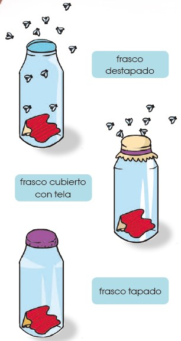
1.5.2 Pasteur y los matraces de cuello de cisne
Con el experimento de Redi, quedó en evidencia que los organismos macroscópicos no podían surgir por generación espontánea, pese a ello, durante el siglo XVIII aún se creía en la generación espontánea de los microorganismos. Según las creencias de la época, simplemente poniendo sustancias en descomposición en un lugar cálido, los microorganismos aparecían en el caldo de cultivo. La controversia duró hasta 1864 cuando Louis Pasteur presentó su experimento en el cual demostró que los microorganismos están presentes en el aire y no se generan de forma espontánea.
En sus experimentos, Pasteur utilizó matraces de cuello de cisne, matraces modificados para conseguir que pasara el oxígeno (solo indispensable para la vida) pero que impedían que las bacterias pasaran ya que quedaban atrapadas en las curvas del cuello del matraz.
Pasteur demostró que si hervía el líquido de los matraces y no se manipulaba el cuello, no aparecía ningún organismo. Sin embargo, si se giraba el matraz o se rompía el cuello del mismo, aparecían microorganismos en el caldo de cultivo, pero no porque se generaran espontáneamente, sino porque estos se encuentran en el aire. Después de este experimento, quedó claro para toda la comunidad científica que los organismos no aparecían de forma repentina y la teoría de la generación espontánea quedó totalmente sin piso.
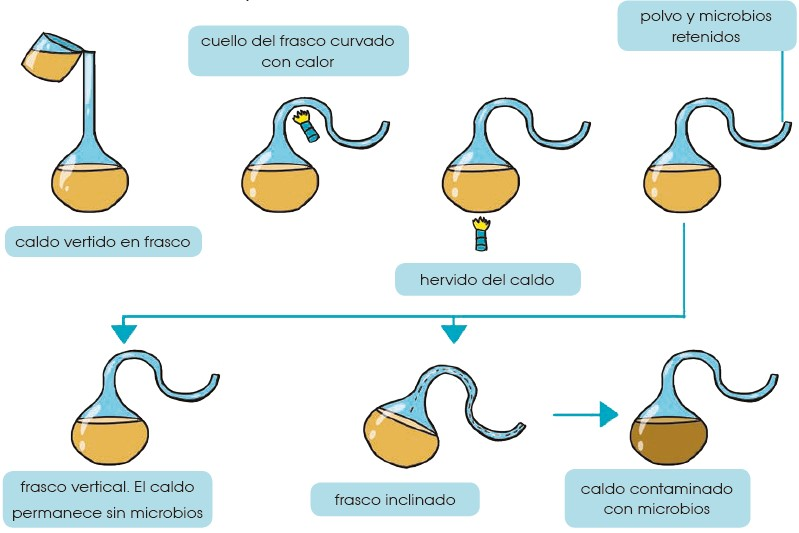
1.5.3 Teoría de la evolución química
Después de los experimentos de Pasteur, quedó claro que la vida no aparecía de forma espontánea, pero seguía sin existir una teoría clara que explicara el posible origen de la vida. Esto fue así hasta 1924 cuando A. I. Oparin y J. B. S. Haldane, de forma independiente, propusieron un marco teórico en el que la vida tuvo que desarrollarse en la Tierra, gracias al cual ya podrían realizarse experimentos que aceptaran o refutaran la teoría.
Tanto Oparin como Haldane propusieron la idea de que, para conocer cómo se originó la vida en la Tierra, debían plantearse las condiciones que existían en la Tierra en ese momento, es decir, hace aproximadamente 3500 millones de años. Estas condiciones eran totalmente diferentes a las que conocemos actualmente, ya que existía una atmósfera reductora (sin oxígeno libre o con muy poco oxígeno), altas temperaturas y grandes cantidades de descargas eléctricas en forma de rayos.
Haldane fue el primero en hablar de un caldo primordial, haciendo referencia al océano que cubriría gran parte de la Tierra en aquella época. En ese caldo, aparecería una enorme cantidad de moléculas orgánicas formadas a partir de moléculas inorgánicas, simplemente desde la energía que se liberaba sobre la Tierra. Del mismo modo, Oparin propuso que las altas temperaturas junto con la radiación ultravioleta y las descargas eléctricas que ocurrían en la atmósfera debido a las tormentas, provocarían una reacción química de los compuestos inorgánicos que darían lugar a los compuestos orgánicos. Esto es lo que conocemos como la evolución química.
Las grandes moléculas orgánicas que se formaron por evolución química debieron seguir evolucionando en moléculas más complejas, hasta que quedara rodeada por una membrana, fuera capaz de autorreplicarse, y diera origen a la vida celular similar a la que conocemos hoy en día.
Las teorías propuestas por Oparin y Haldane no fueron totalmente aceptadas por la comunidad científica, en vista de que recordaban demasiado a la teoría de la generación espontánea. Sin embargo, en 1953, se llevó a cabo un experimento que demostró la viabilidad de la teoría de la evolución química.
Basándose en las teorías de Oparin y Haldane, el científico Stanley L. Miller ideó un experimento que simulara las condiciones terrestres de hace 3 500 millones de años para comprobar si era posible la aparición de moléculas orgánicas a partir de inorgánicas.
Para ello Miller mezcló en un recipiente cerrado los gases que supuestamente existían en la atmósfera primitiva: metano, amoniaco, hidrógeno y vapor de agua. Esta mezcla de gases fue sometida a temperaturas de 80 °C y sobre ella se aplicaron descargas eléctricas durante una semana. Pasado este tiempo, se observó que, disueltos en agua, aparecían varios aminoácidos, moléculas constituyentes de las proteínas. En experimentos posteriores, se descubrió que también se podía obtener uracilo y citosina, moléculas que forman parte del ADN y ARN.
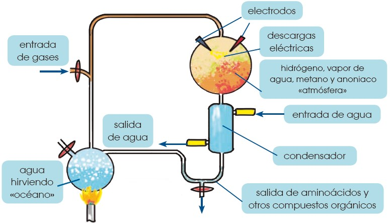
Gracias a este experimento, se concluyó que, si las condiciones de la Tierra eran realmente las que se habían reproducido, la síntesis de compuestos orgánicos a partir de elementos y compuestos inorgánicos sencillos era posible.
Muchos científicos han rechazado esta teoría, puesto que es muy posible que las condiciones en la Tierra primitiva no fueran las planteadas en el experimento de Miller. Sin embargo, durante la segunda mitad del siglo XX se han realizado numerosos experimentos que han modificado las condiciones iniciales, como el experimento realizado por Joan Oró en 1960, en el que, a partir de cianuro de hidrógeno (constituyente de las nubes interestelares y los núcleos de los cometas), obtuvo adenina, compuesto de gran importancia en el ADN.
Aún existen muchos interrogantes sobre las condiciones de la Tierra hace miles de millones de años, pero sí sabemos con seguridad que puede existir una evolución química que forme moléculas orgánicas a partir de inorgánicas, y esto es uno de los posibles orígenes de la vida en nuestro planeta.
Una vez que se hubieran formado las moléculas orgánicas, estas deberían quedar rodeadas por una membrana que las aislara del medio externo y deberían ser capaces de autorreplicarse, pero ¿cómo puede ocurrir esto?
¿Cómo sucede un aislamiento entre un medio externo y uno interno?
El aislamiento del medio exterior proporciona cierta protección frente a los efectos adversos del entorno, y esto permite que en el medio interno se mantengan concentraciones elevadas de componentes que de otra manera se difundirían y dispersarían. Las sustancias, cuando se hallan en mayor concentración pueden reaccionar más rápido y aumentar su eficacia en la producción de polímeros y otros tipos de reacciones químicas.
En sus experiencias, Oparin observó que, cuando se mezclan con agua, algunos polímeros forman unas pequeñas gotitas (de hasta quinientas micras de diámetro), denominadas coacervados o micelas. Estas microesferas sirven para imaginar el comportamiento de gotitas similares que pudieron haberse producido.
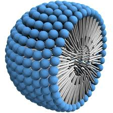
Actualmente, las teorías se dirigen a la búsqueda de moléculas que combinan en su estructura una parte hidrofóbica y una parte hidrofílica. Estas moléculas, en contacto con el agua, forman vesículas membranosas (sacos llenos de líquido) que crecen y se dividen.
¿Cómo se originó la capacidad de reproducción?
Este punto es aún confuso. Si las vesículas contuvieran alguna molécula con capacidad informativa, estaríamos ante el precursor de una célula. La capacidad reproductiva debió desarrollarse paralelamente a la capacidad de sintetizar sustancias y la de obtener energía para la construcción de las propias estructuras.
El flujo de información genética, tal como funciona hoy día, es el paso de ADN a ARN y de este a proteínas. Y aunque se necesita ADN para producir proteínas, también necesitamos para transcribir, traducir, replicar, etc. Por tanto, ¿qué macromolécula fue primero: las proteínas o el ADN?
Según diversas hipótesis, el ARN surgió antes que el ADN y las proteínas en las primeras etapas de la evolución. El ARN controlaría la traducción de proteínas, y el ADN sería posterior. Así se intenta explicar de qué modo se obtuvieron las que se consideran las primeras células: seres similares a las células procariotas.
Sin embargo, estas teorías solo son respuestas provisionales. Con toda seguridad, el desarrollo de nuevas líneas de investigación puede modificar cualquiera de los planteamientos anteriores y posiblemente nos acerquemos, cada vez más, al conocimiento del origen de la vida.
1.5.4 Otras teorías sobre el origen de la vida
A pesar de que actualmente el paradigma sobre el origen de la vida aceptado por la mayoría de la comunidad científica se basa en las teorías de Oparin, existe aún mucha controversia y se mantienen otras posibles hipótesis que darían respuesta a la pregunta ¿cómo se inició la vida en la Tierra?
Dentro de estas hipótesis, hay muchas que sitúan el origen de la vida en algún punto del universo lejano a la Tierra, planteando que la vida en nuestro planeta proviene del exterior y habría llegado a la Tierra a través de cometas o meteoritos. El ejemplo más representativo de estas hipótesis es la panspermia, que propone que formas de vida microscópicas o moléculas orgánicas llegaron a la Tierra a través de meteoritos y, una vez en nuestro planeta, evolucionaron hasta convertirse en las formas de vida que conocemos actualmente.
A favor de esta teoría se han encontrado, en restos de meteoritos, estructuras que podían haber sido causadas por organismos microscópicos. Además, se ha demostrado que algunas bacterias son capaces de sobrevivir largos períodos en el espacio exterior.
La parte negativa de estas teorías es que realmente no dan una respuesta a cómo se originó la vida, simplemente sitúan el inicio de esta en un escenario lejano a la Tierra.
1.5.5 Bioelementos y biomoléculas
El análisis de la composición de los seres vivos nos muestra que los elementos químicos que los constituyen son los mismos que componen el resto de la materia de nuestro planeta, de nuestra galaxia y del universo. Sin embargo, la proporción en la que se encuentran los distintos elementos es diferente en los seres vivos y en la materia inanimada.
Los elementos que predominan en los seres vivos son el carbono (C), hidrógeno (H), oxígeno (O), nitrógeno (N), fósforo (P) y azufre (S). A estos elementos los conocemos como bioelementos primarios, ya que son los elementos indispensables para formar las moléculas que conforman la materia viva y constituyen aproximadamente el 96 % de la misma.
En los seres vivos, encontramos, en un porcentaje mucho menor, otros elementos que consideramos bioelementos secundarios. Estos son necesarios para mantener el equilibrio osmótico y para realizar el metabolismo, por lo que son indispensables para la vida. Los bioelementos secundarios son calcio (Ca), sodio (Na), potasio (K), cloro (Cl), magnesio (Mg), hierro (Fe) y yodo (I).
Por último, encontramos los oligoelementos, que se encuentran en proporciones mucho más bajas y no en todos los seres vivos, pero que tienen un papel importante. Algunos de estos oligoelementos son el flúor (F), el cobre (Cu), el zinc (Zn) o el cobalto (Co).
Los bioelementos establecen entre ellos múltiples y complejas combinaciones, que dan lugar a las biomoléculas, moléculas que constituyen a los seres vivos.
Existen dos tipos de biomoléculas: orgánicas e inorgánicas. Las biomoléculas orgánicas son los glúcidos, los lípidos, las proteínas y los ácidos nucleicos. Todas ellas son sustancias basadas en la unión de numerosos átomos de carbono.
Aunque las biomoléculas orgánicas constituyen una parte importante de los seres vivos, existen dos biomoléculas inorgánicas de gran relevancia para la vida: el agua y las sales minerales.
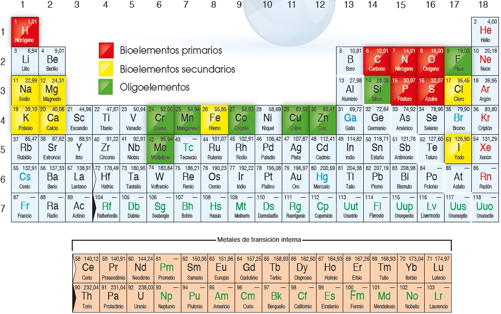
1.6 Agua
El agua es la sustancia más abundante en los seres vivos, ya que constituye alrededor del 70 % de su masa. Debido a su estructura molecular, presenta propiedades que la hacen imprescindible para el desarrollo de la vida.
1.6.0.1 Composición y estructura molecular
La molécula de agua (H2O) está formada por el enlace covalente entre un átomo de oxígeno y dos de hidrógeno, y se caracteriza por:
- Compartición de dos electrones: La compartición de electrones permite mantener una configuración estable.
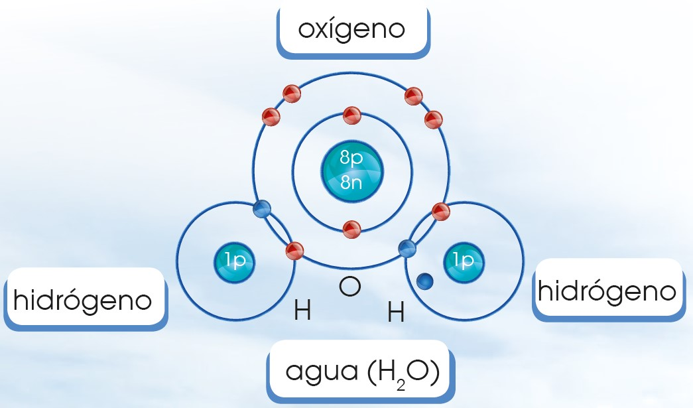
- Polaridad de la molécula: El oxígeno es más electronegativo que el hidrógeno, por lo que atrae hacia su núcleo a los electrones del hidrógeno. Esto produce un reparto desigual de las cargas, por lo que la molécula de agua se convierte en un dipolo eléctrico en el que el oxígeno cuenta con carga negativa y los hidrógenos con carga positiva.
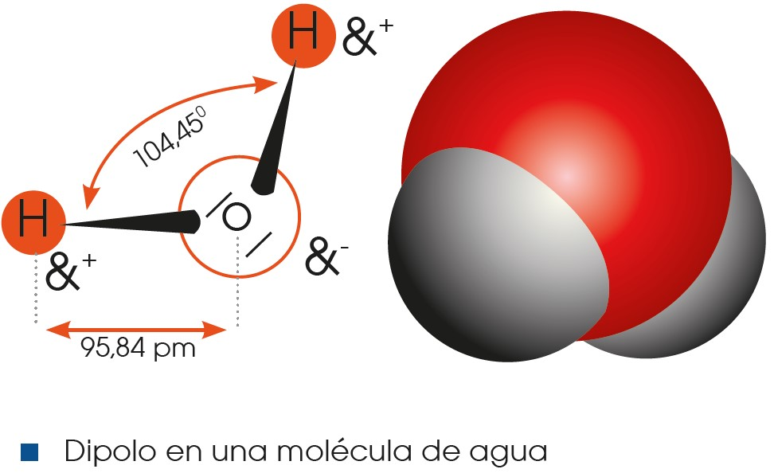
- Formación de puentes de hidrógeno: La atracción entre los átomos de hidrógeno y de oxígeno de diferentes moléculas de agua debido a su diferencia de carga forma un tipo de enlace débil que lo conocemos como puente de hidrógeno.
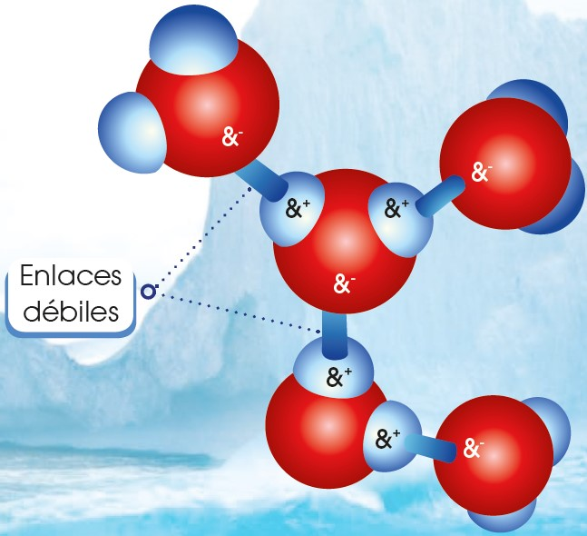
1.6.1 Propiedades fisicoquímicas del agua
Gracias a su composición y estructura molecular, el agua presenta unas propiedades fisicoquímicas que la convierten en una sustancia indispensable para la vida. A continuación, veremos las principales propiedades fisicoquímicas del agua y su utilidad para los seres vivos:
- Elevada tensión superficial
La fuerte cohesión entre las moléculas de agua, causada por los puentes de hidrógeno, provoca que el agua tenga una elevada tensión superficial. Esto se traduce en que las masas de agua, en su superficie, se comportan como una fina película elástica que puede soportar el peso de pequeñas partículas. Muchos insectos son capaces de aprovecharse de esta situación y viven caminando sobre el agua, ya que se desplazan sobre ella sin romper su tensión superficial.
- Capilaridad
Gracias a su tensión superficial y a la adhesión de las moléculas, el agua también presenta la propiedad de la capilaridad. Este fenómeno consiste en el ascenso del agua sin gasto energético a través de tubos estrechos. Cuanto menor sea el diámetro del tubo, más ascenderá el agua. Este proceso, que podemos comprobar viendo cómo se comporta el agua en un sorbete, es muy importante en los seres vivos, ya que ayuda a los sistemas circulatorios y es el fenómeno gracias al cual las plantas pueden absorber agua subterránea desde las raíces y transportarla hasta las hojas sin consumir energía.
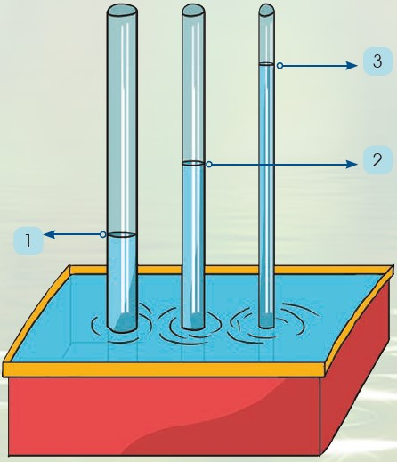
- Elevado calor específico
La capacidad calorífica específica, es decir, la cantidad de calor necesaria para aumentar 1 °C la temperatura de un kilogramo de una sustancia, es muy elevada en el caso del agua, porque los numerosos puentes de hidrógeno que se establecen entre sus moléculas limitan el movimiento de estas y atrasan el incremento de la agitación térmica. El calor específico del agua es de 1 caloría/gramo · °C, o lo que es lo mismo: 4186 julios/ gramo · °C. Esto es más alto que el de cualquier otra sustancia similar al agua.
De este modo, cuando el agua se calienta, la temperatura asciende lentamente, porque no todo el calor se utiliza para aumentar el movimiento de las moléculas, sino que una parte se invierte en romper los puentes de hidrógeno. El descenso de 1 °C también se produce lentamente, en vista de que supone la pérdida de una importante cantidad de calor, la misma que se ha utilizado para producir este incremento.
Por este motivo, el agua desempeña un papel de vital importancia en la regulación de la temperatura de los seres vivos, porque es capaz de absorber y almacenar gran cantidad de calor aumentando muy poco su temperatura. Igualmente, esta propiedad hace que los océanos regulen la temperatura de la Tierra y mantengan un ambiente favorable para el desarrollo de la vida.
- Gran poder disolvente
Debido a la polaridad de las moléculas, el agua tiene la capacidad de disolver distintas sustancias ya sean iónicas o polares. Las sustancias iónicas, como la sal (cloruro de sodio), están formadas por iones, átomos cargados positiva o negativamente. Cloruro de sodio: NaCl -> Na++ Cl–. En contacto con el agua, los iones se separan y quedan rodeados por las moléculas de H2O, así se provoca la disolución de la sustancia iónica en agua.
Las sustancias polares son aquellas que tienen zonas con carga de distinto signo, pero no forman iones. Sustancias, como algunos glúcidos o proteínas, son polares y pueden disolverse en agua, ya que se establecen puentes de hidrógeno entre ellas y el agua y quedan rodeadas por moléculas de H2O.
Esta propiedad es muy importante para la vida, ya que moléculas grandes pueden disolverse y transportarse a través de los sistemas circulatorios de los seres vivos, disueltos en la sangre o en la savia de las plantas.
A las sustancias iónicas y polares que tienen afinidad con el agua y se pueden disolver en ella, las conocemos como hidrófilas; pero del mismo modo existen sustancias hidrófobas, sustancias apolares que repelen el agua como los lípidos.
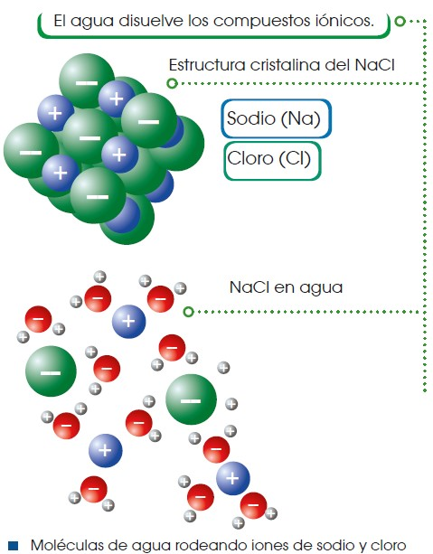
- Densidad
El valor máximo de densidad del agua se obtiene a 4 °C, cuando se establecen numerosos puentes de hidrógeno entre sus moléculas. En este punto, consideramos la densidad del agua como 1 kg/dm3, o lo que es lo mismo, cada litro de agua tiene una masa de un kilogramo. A medida que aumentamos o disminuimos la temperatura del agua desde los 4 °C, su densidad disminuye. Esto es lo que permite que el hielo (agua a 0 °C) flote sobre el agua en estado líquido.
Este hecho será muy importante para la vida ya que, en épocas de frío, los lagos y lagunas quedarán congelados pero solo en su superficie, puesto que el agua congelada flota sobre el agua líquida y permite que en la profundidad siga existiendo vida.
- Bajo grado de ionización
Por lo general, solo una pequeña proporción de las moléculas de agua tienden a ionizarse, es decir, uno de los átomos de hidrógeno se separa para combinarse con otra molécula de agua y esto da lugar al ion hidronio (H3O+) y al ion hidroxilo (OH–).
Cuando una sustancia iónica o polar se disuelve en agua, se altera la cantidad de iones y eso provoca que se modifique el pH. La mayoría de los procesos biológicos dependen del pH y su variación puede alterar el correcto funcionamiento de los organismos.
Como el agua tiene un bajo grado de ionización, es necesario que en los seres vivos existan otros compuestos que actúan como tampón, es decir, mantienen el pH estable.
Aunque el agua no puede actuar como tampón, es importante que existan pequeñas cantidades de iones hidronio e hidroxilo, ya que estas son importantes para llevar a cabo algunas reacciones que ocurren en la célula.
El agua forma parte de diversas soluciones, entre las que destacan por su importancia biológica las soluciones tampón, porque mantienen constante el pH del medio intracelular y extracelular.
Las soluciones tampón están formadas por ácidos débiles o bases débiles, es decir, ácidos y bases que no se ionizan completamente cuando se disuelven en agua.
Cuando las soluciones tampón están formadas por ácidos débiles, estos pueden ionizarse y dar lugar a iones hidrógeno y a un ion aceptor de protones, es decir, una base. La reacción es reversible. HA H+ + A–
Cuando las soluciones tampón están formadas por bases débiles, como resultado de la ionización, se obtienen iones hidroxilo y un ion dador de protones, es decir, un ácido. La reacción también es reversible. BO B+ + OH–
1.6.2 Funciones biológicas del agua
El agua desempeña unas funciones biológicas decisivas en los procesos vitales. Estas funciones se relacionan con las propiedades anteriores.
| Funciones | Propiedades |
|---|---|
Distribuye sustancias. Algunas sustancias, como las sales minerales, circulan hacia las partes aéreas de las plantas y se distribuyen por ellas, gracias al desplazamiento del agua por los vasos conductores. |
La ascensión del agua por los vasos conductores es posible por capilaridad, es decir, por la combinación de la cohesión y la adhesión de las moléculas de agua. Debido a la atracción que ejercen las paredes del vaso conductor sobre las moléculas de agua, estas se adhieren a su superficie y avanzan en sentido ascendente. El resto de las moléculas que constituyen la columna de agua se mueve por cohesión. |
Modera la temperatura interna de los seres vivos. El contenido en agua de los seres vivos amortigua las variaciones de su temperatura interna como consecuencia de cambios bruscos de la temperatura ambiental, o por la producción de calor durante el metabolismo. Este efecto moderador favorece el desarrollo de las reacciones metabólicas. |
El agua necesita absorber mucho calor para aumentar 1 °C su temperatura. Del mismo modo, para que esta descienda 1 °C, se ha de desprender de una gran cantidad de calor. El lento ascenso o descenso de la temperatura del agua se debe a su elevada capacidad calorífica específica |
Permite la vida bajo la superficie helada de lagos y océanos. La capa de hielo que se forma en los lagos y los océanos durante el invierno no impide que, por debajo de ella, en el agua líquida, vivan numerosos organismos. El hielo actúa como aislante térmico y, como no se acumula en el fondo, no supone un obstáculo para el desarrollo de la vida. |
A temperaturas inferiores a los 4 °C, la densidad del agua disminuye en vez de aumentar. De esta manera, el hielo flota sobre el agua líquida. |
Actúa como disolvente. La disolución de sustancias en el citoplasma permite su transporte y su participación en las reacciones metabólicas. |
Las moléculas de agua tienden a separar numerosos compuestos por su elevada capacidad disolvente. Los enlaces de las sustancias se debilitan por la atracción que se establece entre cargas opuestas. |
Participa en diversas reacciones. En las células tienen lugar numerosas reacciones y en algunas de ellas el agua actúa como reactivo. En estas reacciones, denominadas reacciones de hidrólisis, se rompen enlaces de las moléculas por adición de H+ o OH–. |
Algunas moléculas de agua tienen tendencia a ionizarse, es decir, a separarse del oxígeno al que se unen covalentemente para unirse con otro átomo de oxígeno al que están unidas por puentes de hidrógeno. Los iones resultantes son atraídos por otros compuestos, de modo que rompen algunos enlaces existentes y forman nuevos. |
Sales minerales
Las sales minerales forman parte de los seres vivos y, aunque se encuentran en cantidades muy pequeñas en comparación con el agua o las biomoléculas, tienen funciones muy importantes en las reacciones metabólicas, en la regulación de estas o como constituyentes celulares.
Las sales más abundantes en los seres vivos son los cloruros, los fosfatos y los carbonatos de calcio, sodio, potasio y magnesio.
Características
Las sales minerales son sustancias formadas por un catión procedente de una base y un anión procedente de un ácido. Distinguimos dos tipos de sales minerales:
Insolubles: Se encuentran formando un precipitado que no se disocia. Por ejemplo, el fosfato cálcico, Ca3(PO4)2.
Solubles: Se encuentran disociadas en iones, como en el caso del cloruro sódico, NaCl.
Funciones
Las funciones de las sales minerales dependen de su solubilidad en el agua.
Las sales insolubles tienen función estructural, ya que, por ejemplo, los fosfatos y los carbonatos de calcio son componentes de huesos y conchas de los animales.
Las sales solubles se ionizan en sus iones correspondientes, los cuales tienen diversas funciones en las células. Por ejemplo, la transmisión del impulso nervioso depende del intercambio de iones Na+ y K+ entre el medio intracelular y el extracelular a través de la membrana plasmática.
Ósmosis
La presencia de sales disueltas en el agua condiciona el movimiento de las moléculas de agua a través de la membrana plasmática para igualar las concentraciones. Este movimiento es un caso especial de transporte pasivo y lo llamamos ósmosis. Así, las moléculas de agua atraviesan la membrana plasmática desde la disolución de menor concentración, disolución hipotónica, hacia la de mayor concentración, la disolución hipertónica. Cuando el paso del agua iguala las dos concentraciones, las disoluciones reciben el nombre de isotónicas.
Este movimiento del agua a través de la membrana plasmática puede producir que algunas células se arruguen por una pérdida excesiva de agua, que conocemos como plasmólisis, o bien que se inflen por un aumento también excesivo en el contenido celular de agua, fenómeno que llamamos turgencia. Para evitar estas dos situaciones, de consecuencias desastrosas para las células, estas poseen mecanismos para expulsar el agua o los iones mediante un transporte que requiere gasto de energía.
| 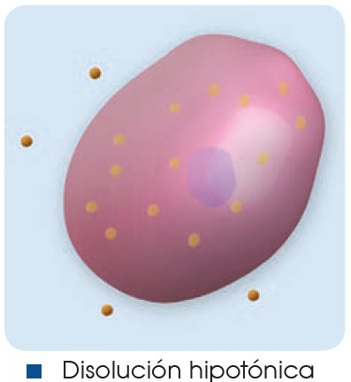 | 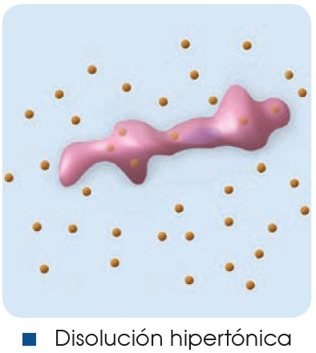 | 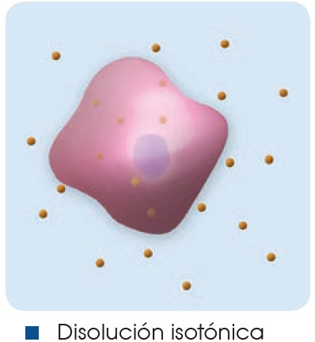 |
La difusión es el transporte de sustancias a través de la membrana que se da a favor del gradiente de concentración. No requiere de aporte energético, pero si las moléculas que atraviesan la membrana son de gran tamaño (ciertas proteínas, por ejemplo), es necesaria la participación de transportadores de membrana.
La diálisis es un caso de difusión selectiva a través de membrana, en el que solo la atraviesan moléculas pequeñas.
Biomoléculas orgánicas
Junto con el agua y las sales minerales, las biomoléculas orgánicas son los componentes fundamentales de la materia viva. Las biomoléculas orgánicas están formadas principalmente por carbono (C) y tienen funciones muy diversas en los seres vivos: estructurales, energéticas, de control en reacciones metabólicas, etc.
La vida, tal y como la conocemos, está basada en el carbono, y este es el único elemento que sirve como esqueleto de las biomoléculas que conforman a todos los organismos. La principal característica que hace que el carbono sea tan relevante es su configuración electrónica que permite que forme cuatro enlaces covalentes simples muy estables, e igualmente podría crear enlaces dobles e incluso triples. De esta forma, los átomos de carbono pueden crear cadenas lineales, ramificadas o cíclicas muy estables sobre las que se van situando otros grupos funcionales, formados en su mayoría por hidrógeno (H), oxígeno (O) y nitrógeno (N).
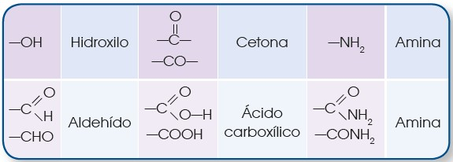
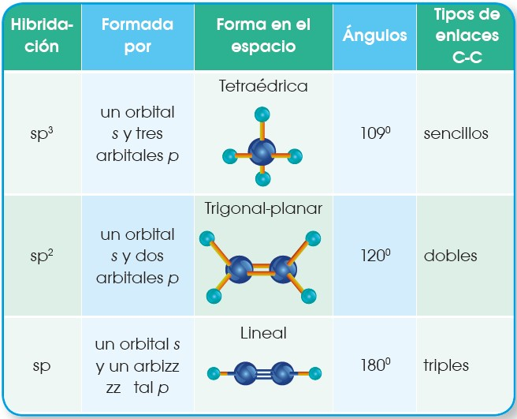
Lo que permite que el carbono pueda formar los cuatro enlaces tan estables, es que sus cuatro electrones de valencia se disponen en una configuración electrónica especial que da lugar al carbono excitado (C+).
Configuración electrónica del carbono en su estado normal: C: 1s2, 2s2, 2p2. Configuración electrónica del carbono excitado: C*: 1s2, 2s1, 2px1py1pz1.
Gracias a esta configuración, los orbitales del carbono hibridan y pueden formar los distintos enlaces.